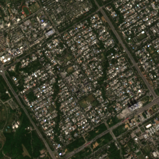
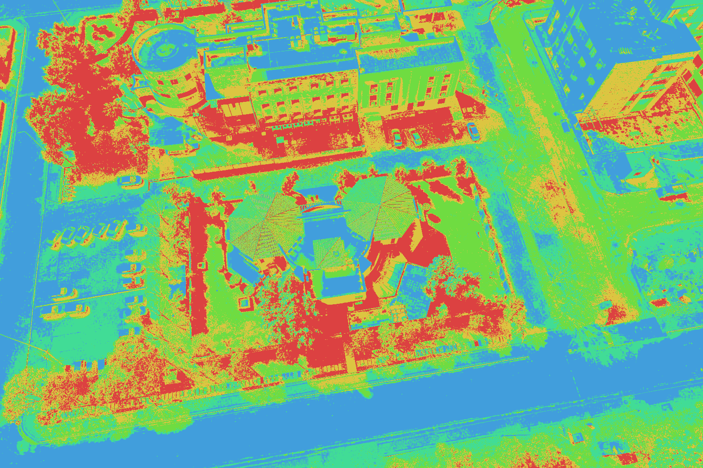

GeoCluster 2.0
A zero-install remote sensing workstation that bridges the gap between raw Sentinel-2 satellite data, vectorized K-Means clustering, and publication-ready cartographic maps — supercharged by Groq LLaMA 3.3 70B AI.
ArcGIS, QGIS, and ENVI demand multi-gigabyte downloads, specialized C++ binaries, and heavyweight workstation hardware that field teams and students lack.
Users must navigate hundreds of nested menus, manual coordinate reference system (CRS/WGS84) transformations, and proprietary raster formats before producing insights.
Prohibitive commercial software licenses and complex cloud credit billing models restrict democratized access to Earth observation data in education and public science.
Zero software installation, zero npm build steps. Runs smoothly on any modern browser backed by a high-concurrency FastAPI server.
Retrieve true-color Sentinel-2 crops by place name, sector code, or lat/long bounding box with automated cloud filtering and ground scaling.
Vectorized intensity histogram clustering segments satellite imagery into land-cover classes (water, forest, urban, grass, soil) in under 15ms.
Compose finished cartographic maps with title, custom legend, metric scale bar, and north arrow on a single WYSIWYG canvas for instant export.
- Modular ES6 JavaScript architecture
- Dual synchronized viewports (Original vs Result)
- Canvas-based live filter previews during drag
- Single-canvas Map Studio renderer
- Zero build pipelines or node_modules bloat
- High-speed in-memory session management
- Global memory guard and LRU eviction policy
- NumPy & headless OpenCV processing
- Vectorized GCH2 Huffman compression
- Single-origin serving (/ and /api)
- Copernicus Data Space Ecosystem (Sentinel-2 L2A)
- OpenStreetMap Nominatim place geocoding
- Groq Cloud: LLaMA 3.3 70B inference
- Automatic token refresh & secret scrubbing
- Sector/Alias Mode: Instant centroid lookup for pre-indexed sectors (e.g. F-8, H-12, NUST campus).
- Global Geocoding: OpenStreetMap Nominatim geocoding throttled at 1 req/s with disk caching.
- Coordinate Bounding Box: Paste opposite latitude/longitude corners directly from Google Maps or GIS surveys.
- Atmospheric Correction: Sentinel-2 L2A Bottom-Of-Atmosphere reflectance bands (B04, B03, B02).
- Ground Scale Metadata: Stores exact meters-per-pixel ratio (10 m/px) for true physical distance measurement.

- 256-LUT Optimization: Maps all pixel intensities into a 256-bin lookup table, collapsing iteration runtime from O(N·K) to O(256·K + N).
- Sub-15ms Convergence: Iterative centroid updates stop when centroid shift < 0.5 intensity units.
- Interactive Re-Coloring: Boundary sliders allow users to adjust land-cover thresholds live on screen.
- Multi-Class Presets: Auto-labels clusters (Shadows, Water, Forest, Rooftops, Soil, Lawn).

- Live Canvas Previews: Sliders for Brightness (-255..255) and Threshold (0..255) draw instant in-browser previews during dragging.
- Odd-Kernel Mean Blur: Box blur smoothing from 3×3 up to 31×31 with reflect-101 border replication.
- Laplacian Edge Detection: 2nd-order spatial derivative highlights geological fault lines, roads, and coastlines.
- Grayscale & Negative: Standard contrast inversion and calibrated luminance extraction.
- Custom Container: GCH2 magic header with rows, cols, channels, payload bits, and 256 frequency table.
- Vectorized Bit-Packing: High-performance NumPy bit-packing with zero rounding or compression artifacts.
- State-Transition Decoding: Pre-built byte transition table decodes 8 bits per table hop for rapid unpack.
- Desktop Format Parity: 100% byte-for-byte compatibility with earlier desktop GeoCluster archives.
Zero API calls & zero tokens: Tool definitions and questions ("What is NDVI?", "What does Laplacian filter do?") are answered locally from a built-in GIS glossary.
Rule-based instant execution: Exact commands ("show me NUST", "run k-means", "open histogram") trigger UI actions without LLM latency or cost.
Strict Whitelist Guardrails: LLaMA-3.3-70B reasons in JSON format and can request at most one verified action from a fixed whitelist. Out-of-range parameters are dropped server-side.
- One-Canvas Architecture: The interactive preview and final high-res export are drawn by the same
drawStudioMapfunction, guaranteeing 100% layout fidelity. - Multi-Scale Rendering: Export at 1x, 2x, or 3x pixel scale for high-DPI academic papers and presentations.
- Automated Ground Scale Bar: Automatically calculates metric (m, km) or imperial (ft, mi) ground units from Sentinel-2 metadata.
- 9 Legend Placements: 5 outside margin placements that never obscure the image, plus 4 on-map corner overlays with class percentages.
- 7 North Arrow Placements: Classic arrow, compass rose, or triangle styles placed on-map or in the top title band.
- Attribution & Coordinates: Automatic Copernicus Sentinel attribution and optional GPS corner coordinates.
log_safety.py intercepts log records and tracebacks, automatically scrubbing credential patterns so keys never leak to logs.
Session images live in RAM with a sliding 60-minute TTL. No client image uploads are ever written to server hard drives.
Token-bucket limits protect upstream providers: 10 req/min for AI chat, 5 req/min for satellite retrieval, 1 req/s for geocoding.
Static server strictly denies dotfiles (.env), path traversal attempts (..), and internal dev folders.
| Feature / Dimension | Desktop GIS (ArcGIS/QGIS) | Cloud Notebooks (GEE/Python) | GeoCluster 2.0 (Web) |
|---|---|---|---|
| Installation | 5 - 15 GB install & licenses | Python / conda environment setup | Zero install (Instant web access) |
| Satellite Retrieval | Manual portal download & import | Requires API coding scripts | 1-Click place name or coordinates |
| User Learning Curve | Steep (Weeks to months) | Requires programming skills | Instant / Guided by AI Assistant |
| AI Copilot Integration | None / experimental plugins | Separate LLM window / manual | Native Groq LLaMA-3.3-70B router |
| Cartographic Map Export | Complex multi-step layout view | Manual Matplotlib coding | WYSIWYG Map Studio (1x, 2x, 3x) |
| Data Persistence & Privacy | Stored on local disks | Stored on 3rd-party cloud | In-memory ephemeral (Zero disk retention) |
Automated calculation of NDVI, NDWI, SAVI, and NBR directly from Sentinel-2 NIR/SWIR bands for crop health monitoring.
Client-side ONNX Runtime models for automated building footprint extraction and road network vectorization.
Ingestion of Landsat 8/9, PlanetScope daily mosaics, and Sentinel-1 Synthetic Aperture Radar (SAR) imagery.
Shared web sessions, collaborative map annotation, and direct GeoTIFF / shapefile vector export.